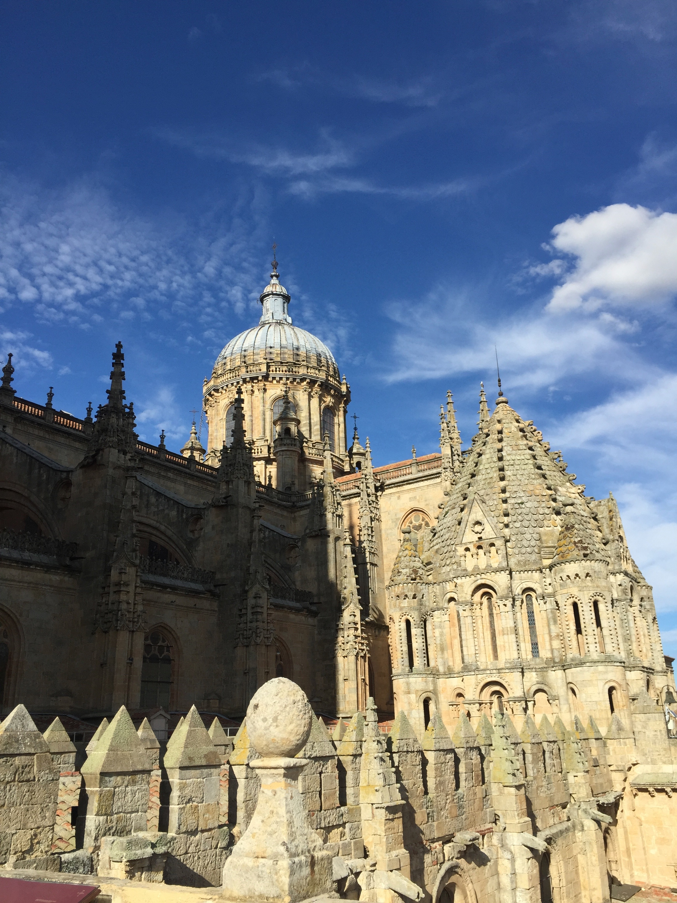
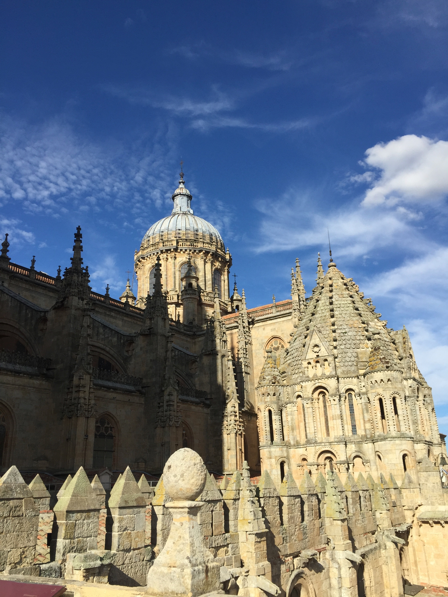

For the final project I will design a portfolio style website that will showcase a portfolio of my art. I would like to display my photography work, photo editing work, sketches and digital artwork. I want the audience to dive into the world through my lens; and uncover my interests, to learn what empowers and inspires me. All of the content displayed in the website will be images and artwork that I have created. However, although it is a personal portfolio, I don’t want the just my content to be the highlight – I want to create a clear and user-friendly website that guides the user through all the content in a concise way. This way it can generate an appreciation for the function of the website itself and act as a template for a portfolio website. The content should be able to speak for itself regardless of what platform it is being shared through, but the advantage of designing the website my way is that it allows me to emphasize the elements that I decide. Furthermore, the idea is to demonstrate an understanding of web design, and how a user can experience visual content in a unique and engaging way. The idea is also not to sell something or persuade a user to a call to action, but instead to inspire the user and motivate the next web designer or visual artist to push their work forward. Moreover, it will be designed to ultimately guide the user to a contact page to share their thoughts/add feedback, or perhaps a submit page where they can share their work, in efforts to promote collaboration amongst artists. This website is the first step in a long-term project, to display my portfolio of work and progression in both graphic design and web development, once I attain a professional skill level in both fields. I will return to this project as a sort of home base upon which I will continue to practice and build on new skills I develop along the way. Looking ahead, long-term goals can be the addition of a full resume page, autobiography, blog, etc.
